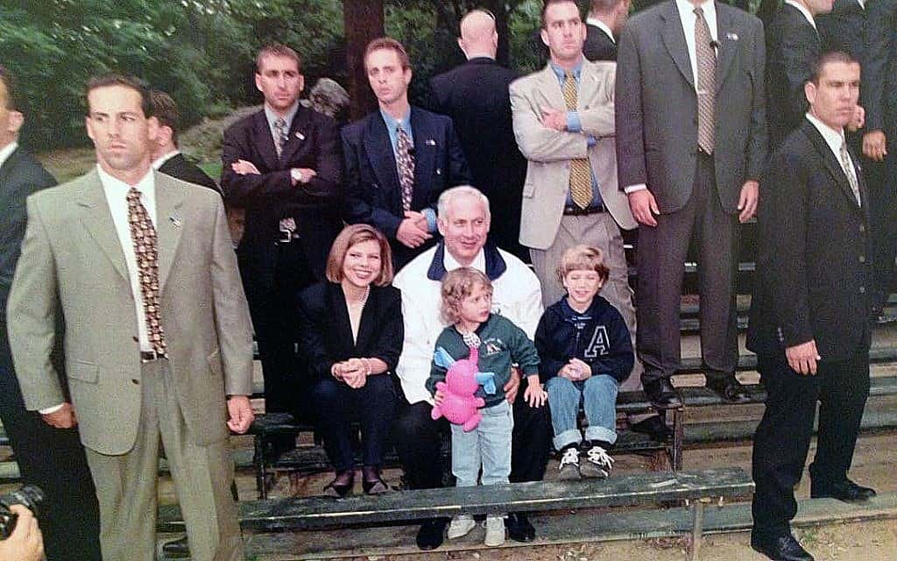

My name is Benjamin Netanyahu, born at 1949 in Tel-Aviv, israel. I am the second of three childerns, spent most of my live in jerusalem. Moved with my family to Philadelphia, US for 6 years and returned to israel at 1967 to serve at the IDF. Served as an officer at Sayeret Matkal and released from duty at 1972 as Captein . During my army service, i have taken a part in many actions and wars which accour at that time, served as reserve soldier at the YOM KIPUR war . Studied and graduated B.D. from MIT and also gradueted from Harverd. After graduation, returned back to israel, and been a part of the israeli parlamnet in many ministerial roles such as:
Married to Sara and have 2 childern, Yair and Avner. currently living at Caesarea Maritima. |
 |
|  | ||
light click for you - large impact on me, if you like the website, like and share
Share the qr so your friends will have fun too
How would i contact the website manager in different web versions: